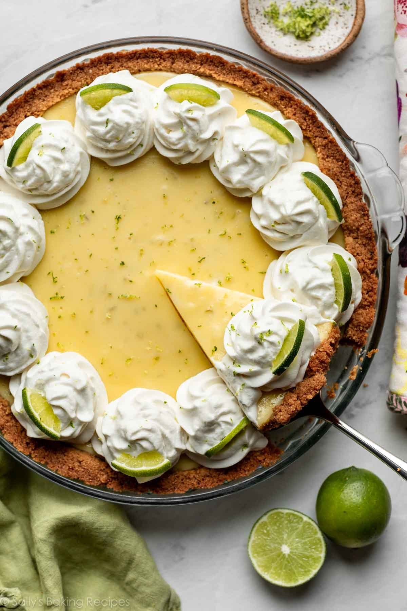

Easy Key Lime Pie

Description
Key lime pie will forever be one of my favorite desserts, and I know I'm not alone! This Florida specialty has been winning over millions for years.
Between the buttery crunchy crust, fresh and tangy custard filling, and the essential creamy topping—no dessert can rival this one!
Ingredients
- 5 egg yolks, beaten
- 1 (14 ounce) can sweetened condensed milk
- ½ cup key lime juice
- 1 (9 inch) prepared graham cracker crust
Directions
- Gather all ingredients.
- Preheat the oven to 375 degrees F (190 degrees C).
- Combine sweetened condensed milk, key lime juice, and egg yolks in a large bowl; mix well.
- Pour mixture into unbaked graham cracker crust.
- Bake in the preheated oven until filling is set, about 15 minutes.
- Allow to cool completely before slicing.